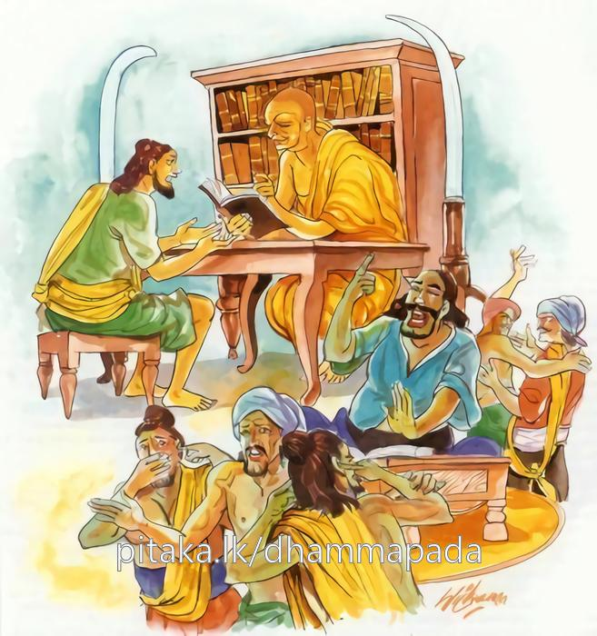

5-4 ගැට කපන සොරු දෙදෙනෙක්
මෙම කතාව ධම්මපද අටුවාවෙන් ද කියවන්න.
යො බාලො මඤ්ඤති බාල්යං පණ්ඩිතො වා’පි තෙන සො
බාලො ච පණ්ඩිතමානී ස වෙ බාලො’ති වුච්චති.
යමෙක් නුවණ නැත්තේ තමාගේ අනුවණබව දනී ද, ඒ කාරණයෙන් හෙ තෙම පණ්ඩිත හෝ වන්නේ ය. (පණ්ඩිත සමාන හෝ වන්නේ ය). යම් අනුවණයෙක් තෙමේ පණ්ඩිතමානී වේ ද (තමා පණ්ඩිතයෙකු කොට සිතා ද), ඒ පුද්ගල තෙමේ ඒකාන්තයෙන් අනුවණයෙකැ යි කියනු ලැබේ.

අප බුදුරජුන් දවස සැවැත්නුවර ගැට කපන සොරු දෙදෙනෙක් වූහ. ඔවුහු මිත්රයෝ ය. බණ අසනු සඳහා, ජෙතවන විහාරයට යන මහාජනයා අතරට වැටී යන මේ යහළුවන් දෙදෙනාගෙන් එකෙක්, සොරකම පසෙක තබා, මහාජනයා හා එක් ව හිඳ බණ අසන්නට වන්නේ ය. අනිකා යමක් කමක් සොරා ගන්නට මාන බලමින් හුන්නේ ය. උන් දෙදෙනා අතුරෙහි බණ අසා සිටියේ සෝවාන්පලයට පැමිණියේ ය. සොරකමට මාන බලමින් සිටියේ බණ පිරිසෙහි හුන් කෙනකුගේ ඉණෙහි ගැටගසා තුබූ ගැටය කපා පස්මස්සක් විතර මුදලක් පැහැර ගත්තේ ය. එය ඔහුගේ ගෙයි බත්මිල විය. අනිකාගේ ගෙදර බත් මිලෙක් නො වී ය. මසු සොරා ගත්තේ, අඹුවත් සමග අනිකාගේ ගෙට ගොස් ‘ඔහේගේ අතිපණ්ඩිත කම නිසා ගෙදොර දොරේ කෑමට හාල් තුණපහේ ආදී වූ කිසිත් නෑ නො වේ ද? මිල මුදලුත් නෑ නේ දැ’ යි ගෙදොර දොරේ අඩුපාඩු කියමින් ඔහු වෙහෙසට පත් කෙළේ ය. එවිට ඔහු ‘බාලභාවය නිසා ම, මොහු මාගේ පණ්ඩිත කම නො දනී ය’ යි සිතා එපුවත බුදුරජුන්ට සැලකරණු පිණිස, නෑදෑයනුත් සමග දෙව්රමට ගොස්, ඒ බව දන්වා සිටියේ ය. එවිට බුදුරජානන් වහන්සේ මේ ධර්මදේශනාව කළ සේක:-
යො බාලො මඤ්ඤති බල්යං පණ්ඩිතො වාපි තෙන සො,
බාලො ච පණ්ඩිතමානී සවේ බාලොති වුච්චතීති.
අඥාන වූ යමෙක් තමාගේ බාලභාවය දනී ද, ඒ හේතුවෙන් ඔහු පණ්ඩිතයෙක් හෝ නො එසේ නම් පණ්ඩිතයකු සමානයෙක් හෝ වන්නේ ය. යම් බාලයෙක් ‘මම පණ්ඩිත වෙමි’ යි සිතා ද ඔහු එකාන්තයෙන් බාල ය යි කියනු ලැබේ.
යො බාලො = අඥ වූ යමෙක්.
‘යො’ යනු, ය, යන්නෙන් ආ ප්රථමාවිභක්ත්යර්ත්ථඑකවචනාන්ත පදයෙකි. ය, ශබ්දය යාන, යාතෘ, ආයු, කීර්ති, ස්තුති යන අර්ත්ථයන්හි වැටේ. තවද ප්රත්යය, ආගම, ආදෙශ, සර්වනාම, බ්යඤ්ජන, ඡන්ද, ගණ වශයෙන්ද යකාරය ආයේ ය. ඒ කීහ මෙසේ:-
“යානෙ යාතරි ආයුම්හි කිත්ති සද්දෙ ච ථොමනෙ,
පයෙ ආගමෙ යො’හු එදන්තස්සාපි කාරියෙ;
සබ්බනාමෙ බ්යඤ්ජනෙ ච, ඡන්දගණෙ යථාරහං” යි.
‘ යන්ති එතෙහීති’ යන වාක්යයෙහි ලා හස්ත්යශ්ව රථාදි වාහනයෝ කියනු ලැබෙති. ‘හත්ථිඅස්ස යානෙහි යා යන්තී ති’ යන වාක්යයෙහි යන්නෝ කියනු ලැබෙති. ‘දීඝො යා ආයු යෙසං තෙ දීඝයා’ යන්නෙහි ආයුෂයයි. ‘පත්ථටයො පත්ථටකිත්තිසද්දො’ යන විවරණයෙහි ලා පත්ථටයො’ යි ආයේ කීර්තියෙහි ය. ‘ගීයතෙ ථොමීයතෙ විඤ්ඤූහීති = යො’ යි ආයේ ස්තුතියෙහි ය. මෙහි වූ ය, ශබ්දය සර්වනාමයෙහි වේ. අර්ත්ථ විසින් අනියමාර්ත්ථය කිය යි.
මඤ්ඤති - දනී (ද).
බල්යං = බාල බව.
‘බාලස්ස භාවො බල්යං’ යනු විවරණය යි. බාල යන ව්යවහාරයට යම් පැවැත්මෙක් උපකාර වේ නම්, එය භාවය යි කියනු ලැබේ. භාව නම්, ශබ්දයාගේ පැවැත්මට නිමිත්ත යි. බාල යන ශබ්දයාගේ පැවැත්මට යමෙක් නිමිත්ත වී නම්, ඒ භාව යි. එනම්, ත්රිවිධ දුශ්චරිත කරණය යි. යමෙක් දුශ්චරිත කෙරේ නම්, එයින් ඔහු බාලයා යි හඳුන්වනු ලැබේ. බාලබවැ යි කීයේ දුශ්චරිත කිරීම යි. අඥානකම මේ සියල්ලට මුල් වේ. එහෙයින් අඥානකම ම ප්රධාන වශයෙන් බාලබව, යි දතයුතු ය.
පණ්ඩිතො = පණ්ඩිත තෙමේ. [1]
සො = හෙතෙමේ.
සො, යනු ත, යන්නෙන් ආ ප්රථමා විභක්ත්යර්ත්ථ එකවචනාන්ත පදයෙකි. ත, ශබ්දය ‘ථෙනෙන්ති තා පරධනං’ යනාදියෙහි ආයේ චොරවාචක වේ. ‘තො තු සිගාලනාමකො’ යනාදියෙහි සිවලා කෙරෙහි වැටේ. ‘තවෙධිකොධනුග්ගහො’ යනාදියෙහි ව්යාලමෘගයා කෙරෙහි ආයේ ය. ප්රත්යය, සර්වනාම වශයෙන් ද තකාරය එන්නේ ය. ‘චොර සිගාලවාලෙසු පච්චයෙ සබ්බනාමිකෙ’ යි මේ කීහ. මෙහි වූයේ සර්වනාම යි.
පණ්ඩිතමානී = පණ්ඩිත වෙමි යි සලකන්නේ.
තෙමේ පණ්ඩිත නො වූයේ ම පණ්ඩිත වෙමි යි සලකන්නේ පණ්ඩිතමානී’ නමි.
සො වෙ බාලො ඉති වුච්චති = ඔහු ඒකාන්තයෙන් බාලය යි කියනු ලැබේ.
යම් අඥයෙක්, අඥවූයේ ම, ‘මම අඥයෙක්මි’ යි තමන්ගේ අඥකම සලකා ද, ඔහු ඒ තමන්ගේ අඥකම සැලකීමෙන් විඥයෙක් වන්නේ ය. නැතහොත් විඥයකු සමානයෙක් වන්නේ ය. ඒ බාලයාහට ‘මම බාලයෙක් වෙමි’ යි සලකා, අන් පණ්ඩිතයකු කරා එළැඹැ, ඔහු ඇසුරු කරමින්, ඔහුගේ අවවාද අනුව හැසිරීමෙන් පණ්ඩිතයකු විය හැකි ය. තව ද සමහරවිට ඔහුට ද වඩා උසස් පණ්ඩිතයකුත් විය හැකි ය. යම් අඥයෙක් අඥ වූයේ ම ‘මා වැනි බහුශ්රැතයෙක්, ධර්මකථිකයෙක්, විනයධරයෙක්, ධුතවාදියෙක්, තවත් කොහි වේ දැ’ යි සිතා ගෙණ, තමාට වඩා නුවණින් වැඩිහිටියකු කරා නො යන්නේ, සේවනය නො කරන්නේ, පර්ය්යාතිය නො උගන්නේ, පිළිවෙත් නො පුරන්නේ වේ ද, ඔහු ගණ්ඨිභේදක සොරා මෙන් මහා අඥානයෙක් ම වන්නේ ය.
මේ ධර්මදේශනාවගේ අවසානයෙහි මහාජන තෙමේ අනික් තැනැත්තහුගේ නෑයනුත් සමග සෝවාන් ඵලාදියට පැමිණියේ ය.
ගණ්ඨිකභේදකවස්තුව නිමි.
-
2-1 ‘පණ්ඩිතා’ යන්න බලනු. ↑